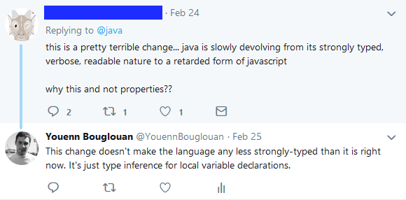

Full name: index.x
Full name: index.y
val char : value:'T -> char (requires member op_Explicit)
Full name: Microsoft.FSharp.Core.Operators.char
--------------------
type char = System.Char
Full name: Microsoft.FSharp.Core.char
val int : value:'T -> int (requires member op_Explicit)
Full name: Microsoft.FSharp.Core.Operators.int
--------------------
type int = int32
Full name: Microsoft.FSharp.Core.int
--------------------
type int<'Measure> = int
Full name: Microsoft.FSharp.Core.int<_>
val int16 : value:'T -> int16 (requires member op_Explicit)
Full name: Microsoft.FSharp.Core.Operators.int16
--------------------
type int16 = System.Int16
Full name: Microsoft.FSharp.Core.int16
--------------------
type int16<'Measure> = int16
Full name: Microsoft.FSharp.Core.int16<_>
val string : value:'T -> string
Full name: Microsoft.FSharp.Core.Operators.string
--------------------
type string = System.String
Full name: Microsoft.FSharp.Core.string
from Microsoft.FSharp.Core
val double : value:'T -> double (requires member op_Explicit)
Full name: Microsoft.FSharp.Core.ExtraTopLevelOperators.double
--------------------
type double = System.Double
Full name: Microsoft.FSharp.Core.double
Full name: Microsoft.FSharp.Core.bool
module List
from Microsoft.FSharp.Collections
--------------------
type List<'T> =
| ( [] )
| ( :: ) of Head: 'T * Tail: 'T list
interface IEnumerable
interface IEnumerable<'T>
member GetSlice : startIndex:int option * endIndex:int option -> 'T list
member Head : 'T
member IsEmpty : bool
member Item : index:int -> 'T with get
member Length : int
member Tail : 'T list
static member Cons : head:'T * tail:'T list -> 'T list
static member Empty : 'T list
Full name: Microsoft.FSharp.Collections.List<_>
Full name: Microsoft.FSharp.Core.Operators.id
from Microsoft.FSharp.Core
Full name: Microsoft.FSharp.Core.Operators.enum
Full name: Microsoft.FSharp.Core.option<_>
Do you even type, Bro?
Who am I?
Youenn Bouglouan
C# by day, F# by night
Why today's topic?
Waterfall vs Agile
Java vs C#
PC vs Mac (vs Linux)
Object Oriented vs Functional
Weakly Typed vs Strongly Typed
Who is this presentation for?
Developers -> get a better idea of what's out there
QA Specialists -> understand why there are bugs and issues
Part I
Typing 101
What's a Type ?
A way to represent
primitive types (int, bool, char, float...)product types (classes, records, objects, tuples...)sum types (unions but not only... we'll see those later!)sets (lists, arrays, maps, dictionaries...)functions (!)interfaces (!)
What's a Type System ?
For a given language:
- defines the
kind of types available maps types to the variousconstructs (expressions, variables, functions... )- determines how types
interact with each other - sets the
rules that make a type either valid or invalid
Typing:
Dynamic vs Static
Dynamic
types are checked at
1: 2: 3: 4: 5: |
|
Static
Types are checked at
1: 2: 3: 4: 5: |
|
Typing:
Weak vs Strong
Not the same as Dynamic vs Static!
Weak
type checking is not (very) strict
implicit conversions (usually)
little guarantees on the program's correctness
Weak typing in a dynamic language
1: 2: 3: 4: 5: 6: 7: 8: 9: |
|
Weak typing in a static language - 1
1: 2: 3: 4: 5: 6: 7: 8: 9: |
|
Weak typing in a static language - 2
1: 2: 3: 4: 5: 6: 7: 8: 9: 10: 11: 12: |
|
Strong
Type checking is strict(er)
program's correctness is easier to prove (well, in theory)
conversions must be explicit
Strong typing in a dynamic language
Back to our first example in Python!
1: 2: 3: 4: 5: |
|
Strong typing in a static language
1: 2: 3: 4: 5: 6: 7: 8: 9: 10: |
|
Typing:
Nominal vs Structural
applies to static typing
Nominal
Very popular in mainstream languages like C#, C++, or Java
Types are identified by their respective
1: 2: 3: 4: 5: 6: 7: 8: 9: 10: 11: 12: |
|
Structural
Also called row polymorphism
Types are identified by their respective
Present under different forms in Elm, Go, TypeScript, Scala, OCaml, Haskell...
1: 2: 3: 4: 5: 6: 7: 8: |
|
But there's more...
Structural subtyping
Beware the awesomeness!
1: 2: 3: 4: 5: 6: 7: 8: 9: 10: |
|
The actual structure of the types is checked as compile-time, making this super safe while giving a dynamic feel to the language
Structural typing
for implicit interface implementation
1: 2: 3: 4: 5: 6: 7: 8: 9: 10: 11: 12: 13: 14: 15: 16: 17: 18: 19: 20: |
|
Duck Typing
If it looks like a duck, swims like a duck, and quacks like a duck, then it probably is a duck.
basically the same as structural typing, but at
1: 2: 3: 4: 5: 6: 7: 8: 9: 10: 11: 12: 13: 14: 15: 16: 17: |
|
A word about Type Inference

Basic Type Inference
1: 2: 3: 4: 5: 6: 7: 8: 9: 10: 11: 12: |
|
Advanced Type Inference
1: 2: 3: 4: 5: 6: 7: 8: 9: 10: 11: 12: 13: 14: 15: 16: 17: 18: |
|
https://en.wikipedia.org/wiki/Hindley%E2%80%93Milner_type_system
Part II
So, do you even type??
Let's start with a simple example
1: 2: 3: 4: 5: 6: 7: 8: 9: 10: 11: 12: |
|
A possible and plausible implementation
1: 2: 3: 4: 5: 6: 7: 8: 9: 10: 11: 12: 13: 14: 15: 16: 17: 18: |
|
Possible outcomes
value of dto |
Result of Validate(...) |
Result of CreateCustomer(...) |
|---|---|---|
not null |
true |
new Customer |
not null |
false |
|
null |
failure |
Other possible scenarios:
- _dbService is
null ->throws exception - _dbService
throws exception -> failure
Let's take a step back
1: 2: 3: 4: |
|

Just another LOB app
1: 2: 3: 4: 5: 6: 7: 8: 9: 10: 11: |
|
A few bug reports later...
1: 2: 3: 4: 5: 6: 7: 8: 9: 10: 11: 12: 13: 14: 15: 16: 17: 18: 19: 20: 21: |
|
Slapping a try-catch there too, just in case of!
1: 2: 3: 4: 5: 6: 7: 8: 9: 10: 11: 12: 13: 14: 15: 16: 17: 18: 19: 20: 21: 22: 23: |
|
So now we know what the problem is
exceptions and nulls make our code brittle and unreliable
http://www.ybouglouan.pl/2017/05/how-to-efficiently-break-your-code-by-using-exceptions/
What can we do about it?
Get rid of nulls and exceptions altogether!

Let's see how to achieve this in 3 little steps
Step 1
Introducing sum types and pattern matching
Sum types can be seen as enums on steroids !
Also called Choice Types, Discriminated Unions, Tagged Unions...
Available in F#, Elm, Haskell, TypeScript, Scala, Rust, Swift...
Very powerful when combined with exhaustive pattern matching
Demo - sum types and pattern matching
sum types and pattern matching in a nutshell
1: 2: 3: 4: 5: 6: 7: 8: 9: 10: 11: |
|
Step 2
Getting rid of nulls using Option
Just a specific sum type with 2 cases!
Option makes the possible absence of value explicit
You have to deal with it at compile time
1: 2: 3: 4: |
|
1: 2: |
|
1: 2: 3: 4: 5: |
|
Demo - fix nulls using Option
Option in a nutshell
1: 2: 3: 4: 5: 6: 7: 8: 9: |
|
Step 3
Getting rid of exceptions using Result
Yet another sum type !
Result makes both the success and error path explicit
1: 2: 3: 4: |
|
1: 2: |
|
1: 2: 3: 4: 5: |
|
Demo - fix exceptions using Result
Result in a nutshell
1: 2: 3: 4: 5: 6: 7: |
|
Enables Railway-Oriented Programming https://fsharpforfunandprofit.com/rop/
That's it!
What did we achieve?
Direct outcomes
- no more null checks everywhere
- no more exceptions and try-catches everywhere
Indirect outcomes
no more lies! - our models are more expressive (
Option ) - our code is more readable and explicit (
Result ) - the compiler is our friend ->
"if it compiles, then it works" TDD!
*Type Driven Development